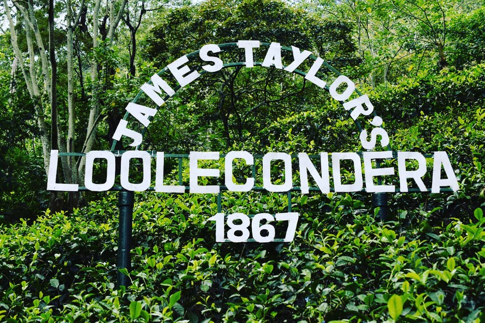
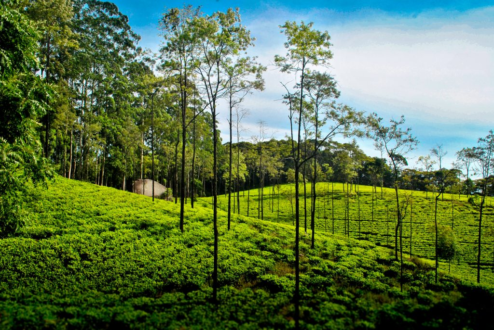
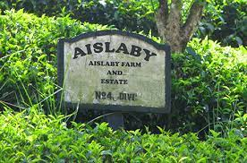

In response to the failure of a coffee plantation in Ceylon, the first plot of tea was planted at Loolkandura Estate in 1867 at the Kandy district as a test (Sri Lanka). James Taylor, the plantation's then-21-year-old planter in command, has been permanently immortalized as a result of the plantation's astronomical success and has been written into Sri Lanka's post-colonial history.
 
The Great Western tea estate is located at the base of the spectacular Great Western range, which is said to include Sri Lanka's sixth-highest peak at an elevation of 2215 meters. The estate, which is 1448 meters above sea level, is known for producing teas that are classified as coming from the Dimbula region. The Great Western Estate spans 628 hectares overall and generates about 615,000 kg of tea annually.


Located in Rambado town, Sri Lanka, Bluefield Tea Garden is a well-known hillside tea production plantation that is around 1200 meters above sea level. It is the most popular tea plantation in the Nuwara Eliya area of the central hill country, which boasts of a beautiful environment surrounded by several tea estates and foggy mountains. Bluefield Tea Factory is where you can learn about and buy many types of garden-fresh tea. It is also known as Little England due to the similarity in its infrastructure.


Bandarawela and Attampitiya are nearby neighborhoods in the Badulla district where Aislaby is located. The gardens are located between an altitude of 1218m (3996ft) and 1191m (3907ft) above sea level. The initial planting year was 1920. The magnificent wintergreen aroma and flavor of Aislaby tea is its most wonderful and unexpected characteristic. The ideal time of year for the area is fairly specific. What we provide to you is this seasonal Pekoe. You'll feel special and revived after drinking that ideal, unpredictable brew.

| Type of Tea | Where it is exported to | Images | Average Price Range - 1kg |
|---|---|---|---|
| Black tea |
|


|
$70.00 - $95.00 |
| Green tea |
|


|
$20.00 - $30.00 |
| White tea |
|


|
$120 - $140 | Info from Sri Lanka Tea Board |